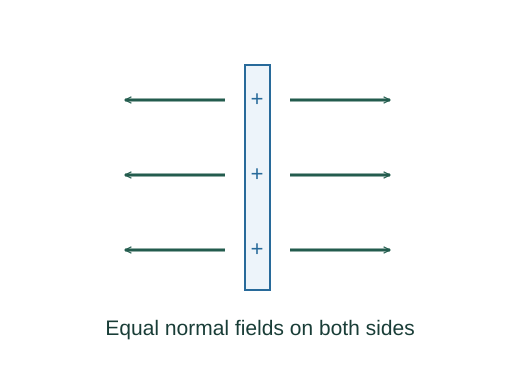

Derive fields of an infinite line and sheet
For highly symmetric sources, choose a Gaussian surface on which the normal field is either constant or zero. This turns a surface integral into field magnitude times a known area.
What the symbols mean
λ: charge per length; σ: charge per area; r: perpendicular distance from the infinite line. Displayed E values are magnitudes.
When this applies
Infinite straight line or infinite uniform nonconducting sheet in vacuum. Large finite objects approximate these near their middle, away from edges.
Developing the argument

Choose a cylindrical surface for the line
The field is radial and constant on a coaxial cylinder of radius r and length ℓ. The end caps have zero flux because their area vectors are parallel to the line.
Apply Gauss’s law to the line
Divide enclosed-charge-over-permittivity by the cylinder’s side area. Length cancels, leaving an inverse-distance field.
A closer lookWhy may the field leave the integral? ↗Choose a pillbox crossing the sheet
Reflection symmetry gives equal field magnitudes on both sides, normal to the plane. The side has no flux; each flat cap contributes EA.
Apply Gauss’s law to the sheet
Area cancels. An infinite sheet has a distance-independent field on either side; two opposite sheets superpose to give σ/ε₀ between them.
A worked example
Two large oppositely charged plates with |σ| = 10⁻⁶ C/m² have an interior field about 1.13 × 10⁵ N/C when edge effects are negligible.
Derivation behind this calculation ↗A point to keep straight
A conductor’s surface relation Eoutside = σ/ε₀ uses zero interior field and one exterior cap. It differs from an isolated nonconducting sheet.
Check the assumptions and derivation ↗